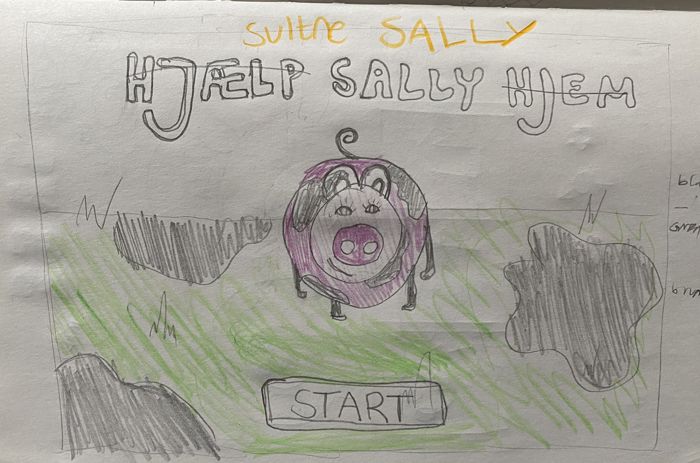
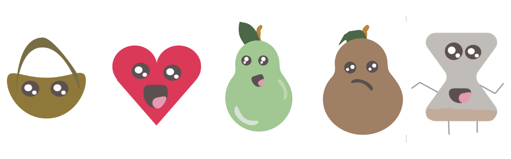
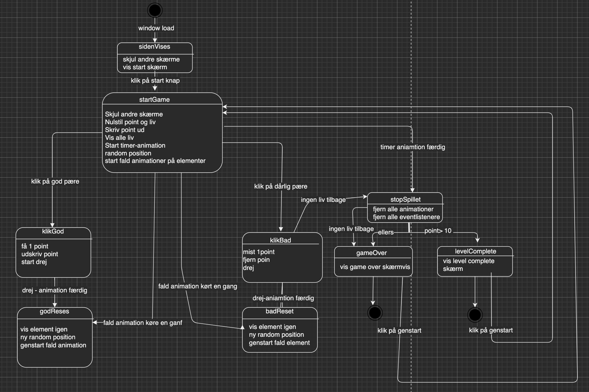
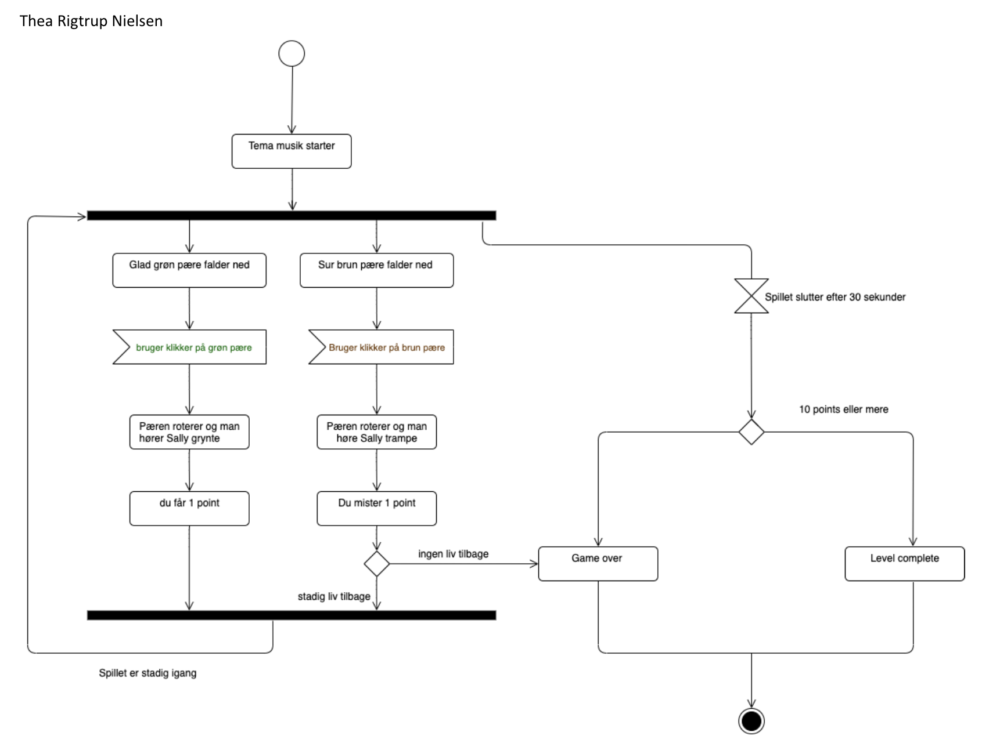
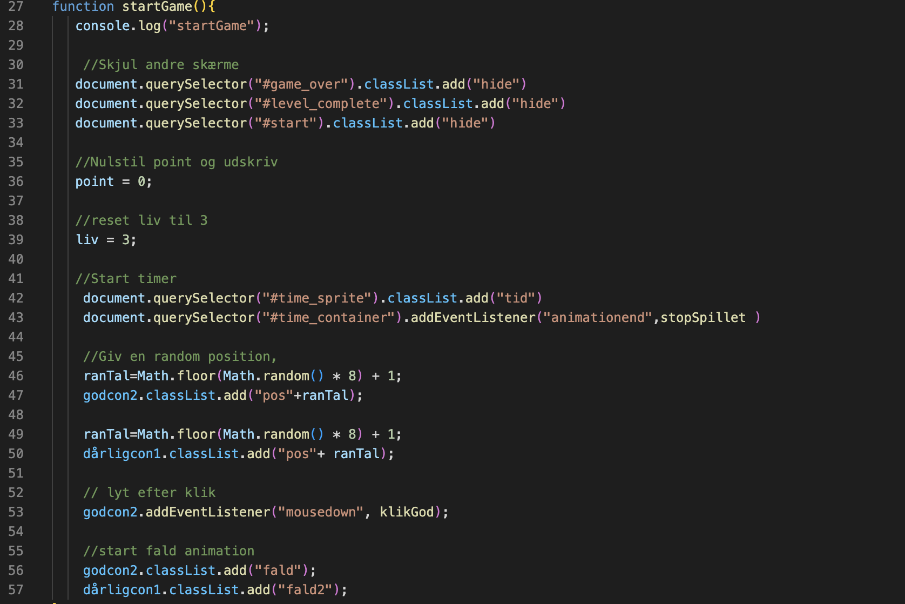
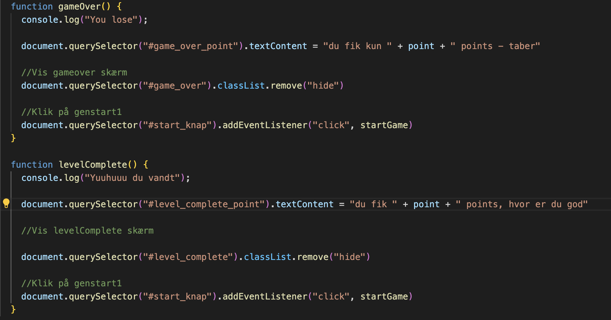

Spil
I spil forløbet var målet at designe og kode et spil man selv fandt på. Her lærte vi om hvordan man ved hjælp af javascript kunne udføre mere avancerede ting på ens website. Derudover lærte jeg også en del om grafisk design. Da vi selv skulle designe alle baggrunde og ui- elemeter(som i kan se et lille udsnit af nedenunder). i dette emne lærte jeg virklig vigtighened af at have system i sin kode og fejlfinding. Dette er helt sikkert noget jeg vil tage med videre i kommende projekter, fordi et godt overblik, kan spare en for mange timers fejlfinding Det sværeste ved dette forløb var at få en fortåelse for hvordan javascript fungerede og hvad der, fik hvad til at ske , som jeg også var ekstra opmærksom på at blive bedre til i de forskellige øvelsesopgaver vi havde i forløbet.
Proccesdokumentation
Skitser

animationer

statemachine diagram

Aktivitetsdiagram

Javascript start game

Javascript game over / level complete
